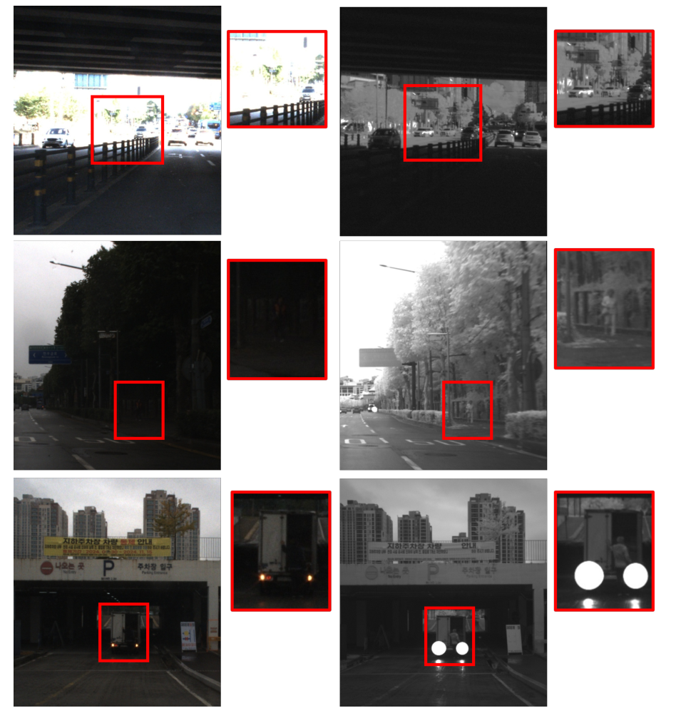
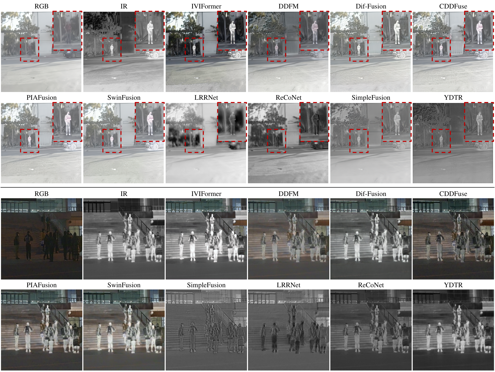
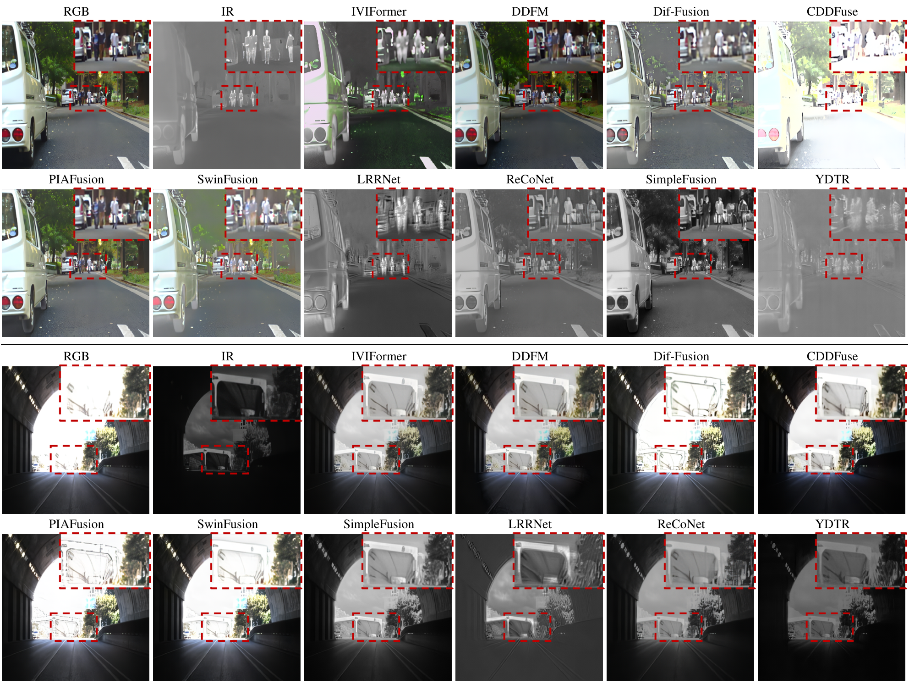

Abstract
A critical challenge in autonomous driving is maintaining robust perception across drastic illumination changes, from day to night. While infrared-visible image fusion (IVIF) offers a promising solution, most existing methods adopt a static, illumination-agnostic approach, failing to adapt to the changing importance of each sensor modality. In this paper, we introduce IVIFormer, a novel fusion network that explicitly tackles this limitation through a dynamic, condition-aware strategy. The core of our method is the Adaptive Domain-Switching Cross-Attention (ADS-CA), a mechanism that dynamically reverses the roles of query and key/value features between the infrared and visible domains. This switching is guided by a highly efficient Light Condition Decision Module (LCDM) that classifies the scene as day or night. This explicit, adaptive design allows IVIFormer to intelligently leverage the most informative sensor data for any given lighting condition. Extensive experiments on public long-wave infrared (LWIR) datasets and our newly collected short-wave infrared (SWIR) dataset demonstrate that IVIFormer achieves competitive performance. Both quantitative and qualitative results validate its superiority in preserving crucial details and enhancing scene visibility, especially under challenging lighting transitions. Code and pretrained models are available at: https://github.com/Yonsei-STL/IVIFormer
Method
IVIFormer makes the day/night decision explicit rather than using a fixed fusion rule. Its Light Condition Decision Module (LCDM) predicts the illumination condition from the RGB image. That decision controls the direction of Adaptive Domain-Switching Cross Attention (ADS-CA).
| Illumination | Query (Q) | Key and value (K/V) |
|---|---|---|
| Day | RGB features | Infrared features |
| Night | Infrared features | RGB features |
Channel-wise multi-head cross-attention combines the selected features, followed by a residual connection to the domain used as the query. The training objective combines illumination, light-condition, auxiliary-intensity, and local-variance losses.
GPT-4o-generated day/night pseudo-labels supervise the LCDM. The illumination decision is binary; extending it to dusk, dawn, and more nuanced weather and lighting conditions is identified as future work.
Evaluation Datasets
Experiments cover the public FLIR, MFNet, and FMB RGB–LWIR datasets, along with a newly collected 2,390-pair RGB–SWIR dataset. The SWIR collection includes urban roads, tunnels, and rainy scenes, with source recordings at 1826 × 1085 pixels and an 8:2 training/test split. Experimental inputs are resized to 256 × 256 pixels.

Experimental Results
The table reproduces the four-head IVIFormer h4 rows from the paper. Higher values are preferred for all nine reported fusion metrics.
| Dataset | EN | SD | SF | AG | MI | CC | SCD | VIF | Qabf |
|---|---|---|---|---|---|---|---|---|---|
| FLIR (LWIR) | 7.32 | 55.58 | 19.52 | 6.34 | 5.16 | 0.51 | 1.26 | 0.92 | 0.55 |
| FMB (LWIR) | 6.93 | 43.82 | 21.93 | 5.66 | 3.87 | 0.57 | 1.37 | 0.90 | 0.61 |
| MFNet (LWIR) | 6.55 | 39.35 | 18.41 | 5.32 | 3.16 | 0.55 | 1.40 | 0.89 | 0.56 |
| Collected SWIR | 7.11 | 64.16 | 11.86 | 3.57 | 3.63 | 0.93 | 1.29 | 1.00 | 0.59 |
EN: entropy; SD: standard deviation; SF: spatial frequency; AG: average gradient; MI: mutual information; CC: correlation coefficient; SCD: sum of the correlations of differences; VIF: visual information fidelity; Qabf: source-detail preservation measure.


Downstream object detection on FMB
A DINO detector is trained with either IVIFormer-fused images or RGB images. Overall mAP increases from 0.2505 to 0.2673. The gains are class-dependent: Person and Motorcycle improve, while Car, Traffic Sign, and Bus decrease in this experiment.
| Class / metric | RGB AP | IVIFormer AP |
|---|---|---|
| Car | 0.5317 | 0.5201 |
| Person | 0.2018 | 0.3638 |
| Traffic Sign | 0.2752 | 0.2224 |
| Motorcycle | 0.1027 | 0.1223 |
| Bus | 0.1410 | 0.1080 |
| mAP | 0.2505 | 0.2673 |
Code and Models
The official implementation and pretrained models are hosted in the lab’s IVIFormer repository.
BibTeX
@inproceedings{park2025iviformer,
title = {{IVIFormer: Illumination-Aware Infrared-Visible Image Fusion via Adaptive Domain-Switching Cross Attention}},
author = {Park, Incheol and Jin, Youngwan and Nalcakan, Yagiz and Ju, Hyeongjin and Yeo, Sanghyeop and Kim, Shiho},
booktitle = {2025 IEEE/CVF International Conference on Computer Vision Workshops (ICCVW)},
pages = {2241--2250},
year = {2025},
doi = {10.1109/ICCVW69036.2025.00234},
url = {https://doi.org/10.1109/ICCVW69036.2025.00234}
}
Original publication
Incheol Park, Youngwan Jin, Yagiz Nalcakan, Hyeongjin Ju, Sanghyeop Yeo, Shiho Kim. IVIFormer: Illumination-Aware Infrared-Visible Image Fusion via Adaptive Domain-Switching Cross Attention.
ICCV Workshops, 2025. 2025 IEEE/CVF International Conference on Computer Vision Workshops · pp. 2241–2250.
DOI: 10.1109/ICCVW69036.2025.00234